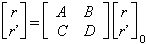
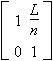
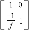
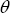
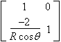
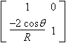
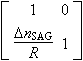
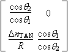
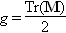

The ABCD or ray-matrix formalism is used in the paraxial approximation of geometrical optics. A ray is characterised by its lateral position r relative to the central axis of the system, and the slope
We can then define a 2 x 2 matrix for an optic or a set of optics that maps the incident r,

LaserCanvas uses the reduced-angle convention described in A.E. Siegman, Lasers, University Science Books (1986). In this convention, the second element of the [r,
The ABCD matrices as used by LaserCanvas are listed in the following table.
| Element | Parameters | Sagittal | Tangential |
| Space | Distance L Refractive index n |
 | |
| Lens | Focal length f |  | |
| Mirror | Radius Curvature R (Concave: R > 0) Incidence angle  |
 |  |
| Curved dielectric |
|
 |  |
For a resonator, the system stability can be calculated from the trace of the round-trip matrix M by

For stable resonators,
The ABCD matrices are not explicitly stored. They are calculated whenever necessary from the optic properties. Since many of the optics' properties can be defined using equations, the ABCD matrices are, in general, not constant.
For the resonant and propagating mode calculations, the ABCD matrices are represented in a custom 4-element class using IEEE double precision. The matrix pre-multiplication used in resonator calculations is explicitly expanded by element.